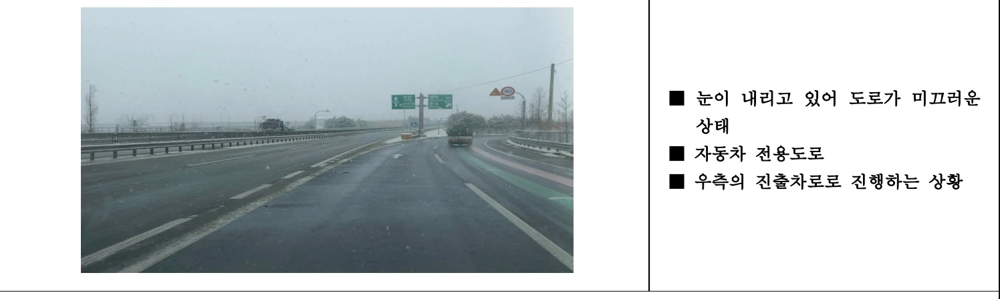

729. Дараах нөхцөлд хамгийн аюулгүй жолоодох арга 2-ыг сонгоно уу.

- ①Зүүн чиг заах дохио өгч, аюулгүйн зай барин нөхцөл байдалд тохируулан баруун тийш гарна.
- ②Урд болон арын хөдөлгөөнийг ажиглан гарах эгнээ рүү орно.
- ③Гарах гарцыг өнгөрүүлсэн бол ухарч буцан ирээд анхны зорьсон замаараа явна.
- ④Гарах эгнээнд автомашин харагдахгүй бол чиг заах дохио өгөх шаардлагагүй.
- ⑤Хальтрахаас сэргийлэхийн тулд урд автомашинтайгаа ердийн үеэс илүү зайтай явна.
Хариулт харах
Зөв хариулт
② Урд болон арын хөдөлгөөнийг ажиглан гарах эгнээ рүү орно.
⑤ Хальтрахаас сэргийлэхийн тулд урд автомашинтайгаа ердийн үеэс илүү зайтай явна.
Үндэслэл
Замын хөдөлгөөний тухай хуулийн 19 дүгээр зүйлийн 3 дахь хэсэг) чиглэлээ өөрчилж буй бусад тээврийн хэрэгслийн хэвийн зорчиход саад учруулах эрсдэлтэй тохиолдолд аливаа тээврийн хэрэгслийн жолооч тээврийн хэрэгслийн чиглэлийг өөрчлөх ёсгүй. Жолооч чиглэлээ өөрчлөх гэж байгаа бол эргэх дохионы чийдэнг ашиглан үйлдэл дуустал дохио өгөх ёстой. (Замын хөдөлгөөний тухай хуулийн 38 дугаар зүйлийн 1 дэх хэсэг). Та цааш явахаасаа өмнө эгнээгээ гэнэт сольж болохгүй, хангалттай аюулгүй зай барьж, эргэхийг хүссэн чиглэлдээ эргэх дохиог асаах хэрэгтэй.
Үндэслэлийн текст нь машин орчуулга.